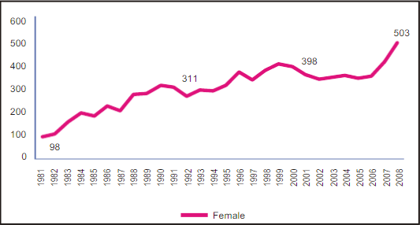
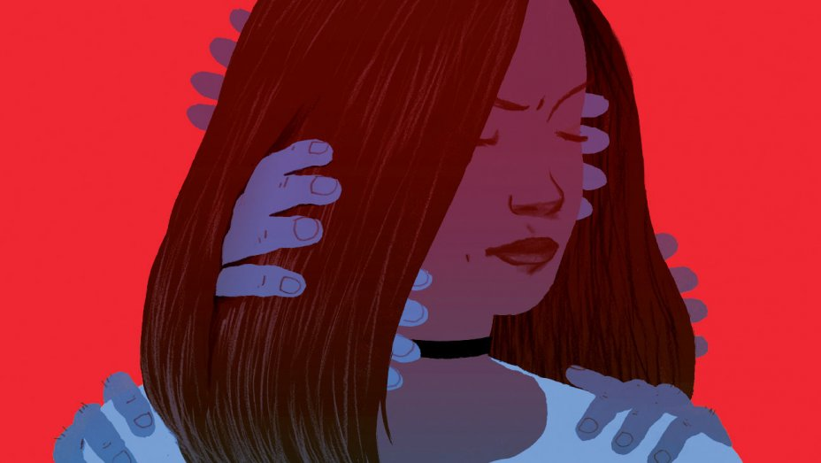

Report
Abstract:
Pakistan is no exception from violence against women. Violence against women (hereinafter VAW) has an extensive prevalence in Pakistan in numerous forms e.g. domestic and sexual violence, murder, rape, spousal abuse, acid attacks, being burned by family, honour killing, vani, kidnapping and abduction etc. Pakistan is a state party to the Convention on the Elimination of All Forms of Discrimination Against Women (CEDAW). Under CEDAW commitments the state parties are bound to take measures for elimination of violence against women. The CEDAW periodic report submitted by Pakistan identifies that the easily access to gender disaggregated data on various crimes in the country has not yet been established which is a major handicap in addressing the issue of VAW. Some Non-Governmental Organizations (NGOs) do collect data on crimes against women but this data, to a large extent, is based on the media reports, and cuttings from the newspapers. Such source of data may be valid but is not reliable. The NGOs data It is a fact that women's rights are continuously violated at a large scale in Pakistan. Violence against women is a systematic and widespread violation of human rights, not only in Pakistan but also in the entire world. The rate of official reported violence against women acts in Pakistan is below the print media reported cases. The conviction ratio in crimes against women cases is very low. This article focuses on official recorded statistical figures of violence against women in Pakistan. It also highlights the prevalence and trend in violence against women in the country. In addition, the article presents major constraints in investigation and data collection in violence against women cases

Murders of women in the NWFP from 1981 - 2008
| S.no | Area | Rape | Acid | Suicide | Total | % Age Of Total |
|---|
Report
Murders
Pakistan is no exception from violence against women. Violence against women (hereinafter VAW) has an extensive prevalence in Pakistan in numerous forms e.g. domestic and sexual violence, murder, rape, spousal abuse, acid attacks, being burned by family, honour killing, vani, kidnapping and abduction etc. Pakistan is a state party to the Convention on the Elimination of All Forms of Discrimination Against Women (CEDAW). Under CEDAW commitments the state parties are bound to take measures for elimination of violence against women. The CEDAW periodic report submitted by Pakistan identifies that the easily access to gender disaggregated data on various crimes in the country has not yet been established which is a major handicap in addressing the issue of VAW. Some Non-Governmental Organizations (NGOs) do collect data on crimes against women but this data, to a large extent, is based on the media reports, and cuttings from the newspapers. Such source of data may be valid but is not reliable. The NGOs data It is a fact that women's rights are continuously violated at a large scale in Pakistan. Violence against women is a systematic and widespread violation of human rights, not only in Pakistan but also in the entire world. The rate of official reported violence against women acts in Pakistan is below the print media reported cases. The conviction ratio in crimes against women cases is very low. This article focuses on official recorded statistical figures of violence against women in Pakistan. It also highlights the prevalence and trend in violence against women in the country. In addition, the article presents major constraints in investigation and data collection in violence against women cases. KeywordsViolence, Aggression, Violence Against Women (VAM), Police, Data Constraints, Investigation, Prosecution, Conviction Ratio, Pendency, Domestic Violence, Rape, Honour Killing, Acid Throwing, Women Police. IntroductionWorldwide, violence against women is one of the major human rights concerns.Murders of women in the NWFP from 1981 - 2008
| S.no | Province | Average Population | Average % |
|---|
